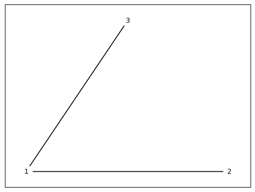
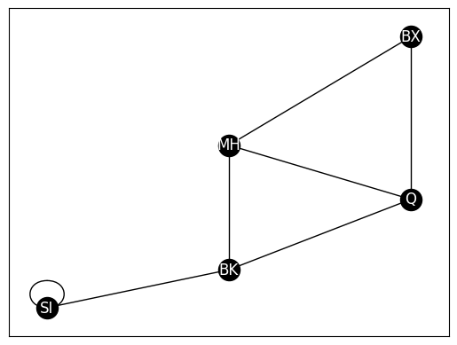
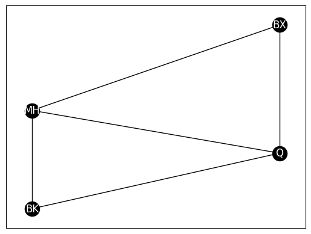
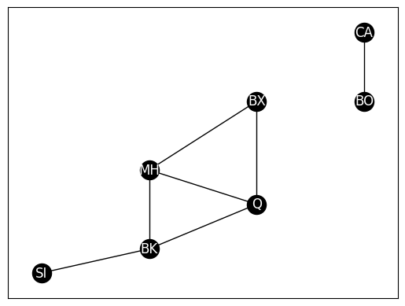
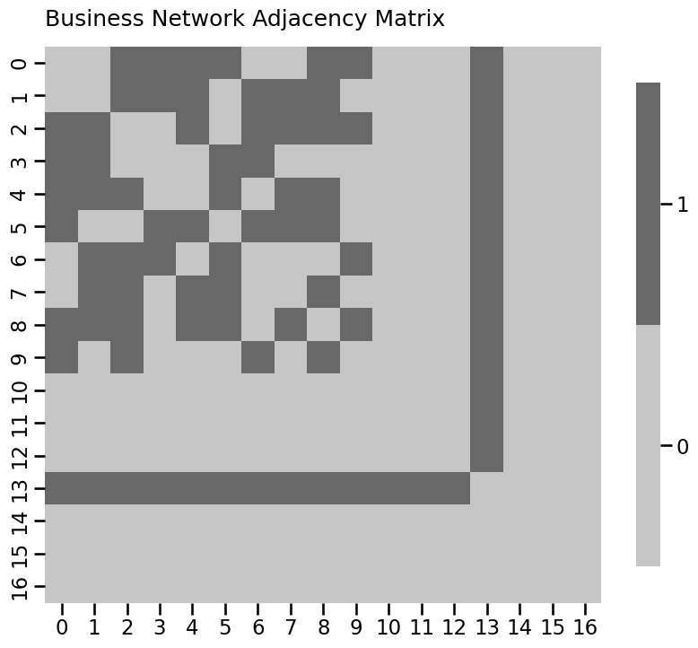
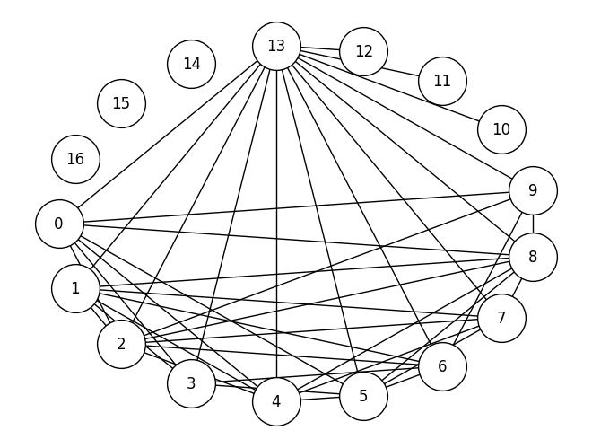
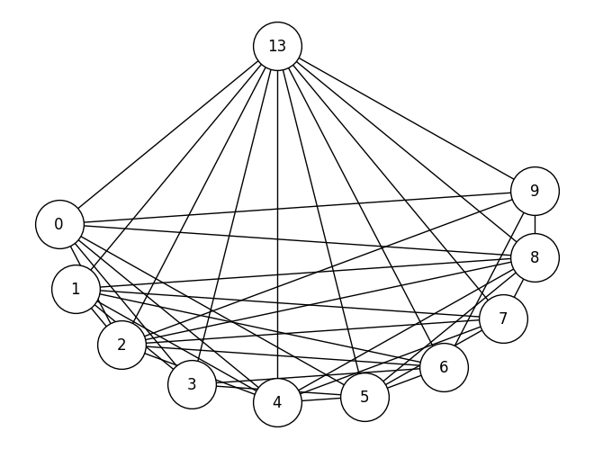
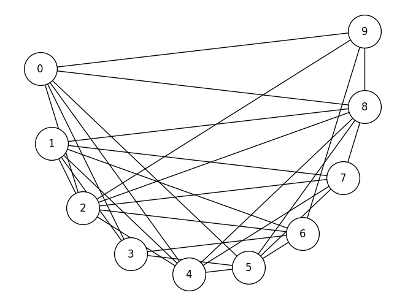
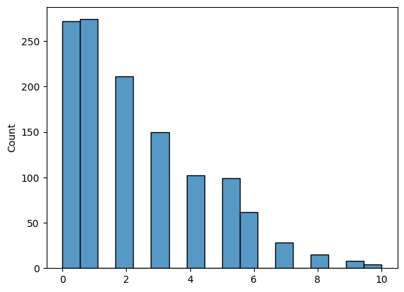

Code Reproducibility#
import numpy as np
import networkx as nx
G = nx.DiGraph()
# add nodes to the network
G.add_node("1", pos=(1,1))
G.add_node("2", pos=(4,4))
G.add_node("3", pos=(4,2))
# add edges to the network
G.add_edge("1", "2")
G.add_edge("2", "1")
G.add_edge("1", "3")
G.add_edge("3", "1")
# the coordinates in space to use for plotting the nodes
# in the layout plot
pos = {"1": (0, 0), "2": (1, 0), "3": (.5, .5)}
nx.draw_networkx(G, with_labels=True, node_color="white", pos=pos,
font_size=10, font_color="black", arrows=False, edge_color="black",
width=1)

from graphbook_code import heatmap
import matplotlib.pyplot as plt
import seaborn as sns
# convert the networkx graph to a numpy array
A = np.asarray(nx.to_numpy_array(G))
heatmap(A, annot=True, linewidths=.1, cbar=False,
title="Adjacency matrix", xticklabels=[1,2,3], xtitle="Node",
yticklabels=[1,2,3], ytitle="Node"
)
<Axes: title={'left': 'Adjacency matrix'}, xlabel='Node', ylabel='Node'>
import networkx as nx
from graphbook_code import heatmap
# create an undirected network G
G = nx.Graph()
# add the nodes like before
G.add_node("SI", pos=(2,1))
G.add_node("MH", pos=(4,4))
G.add_node("BK", pos=(4,1.7))
G.add_node("Q", pos=(6,3))
G.add_node("BX", pos=(6,6))
# specify boroughs that are adjacent to one another
pos = nx.get_node_attributes(G, 'pos')
G.add_edge("SI", "BK")
G.add_edge("MH", "BK")
G.add_edge("BK", "Q")
G.add_edge("MH", "Q")
G.add_edge("MH", "BX")
G.add_edge("Q", "BX")
A = nx.to_numpy_array(G)
# plotting
nx.draw_networkx(G, with_labels=True, node_color="black", pos=pos,
font_color="white", edge_color="black")
# pass in the xticklabels and yticklabels corresponding to the
# appropriately ordered boroughs (in the order we constructed them)
heatmap(A.astype(int), xticklabels=["SI", "MH", "BK", "Q", "BX"],
yticklabels=["SI", "MH", "BK", "Q", "BX"],
xtitle="Borough", ytitle="Borough"
)
<Axes: xlabel='Borough', ylabel='Borough'>
from copy import deepcopy
G_dir = G.to_directed()
# remove the edge from BK to SI
G_dir.remove_edge("BK", "SI")
nx.draw_networkx(G_dir, with_labels=True, node_color="black", pos=pos,
font_color="white", arrows=True, edge_color="black")

from graspologic.utils import is_symmetric
A = nx.to_numpy_array(G)
is_symmetric(A)
# True
A_dir = nx.to_numpy_array(G_dir)
is_symmetric(A_dir)
# False
False
G_loopy = deepcopy(G)
# add edge from SI to itself
G_loopy.add_edge("SI", "SI")
nx.draw_networkx(G_loopy, with_labels=True, node_color="black", pos=pos,
font_color="white", edge_color="black")

from graspologic.utils import is_loopless
is_loopless(A)
# True
A_loopy = nx.to_numpy_array(G_loopy)
is_loopless(A_loopy)
# False
False
G_weight = nx.Graph()
G_weight.add_node("SI", pos=(2,1))
G_weight.add_node("MH", pos=(4,4))
G_weight.add_node("BK", pos=(4,1.7))
G_weight.add_node("Q", pos=(6,3))
G_weight.add_node("BX", pos=(6,6))
# this time, we add weights to the edges
pos = nx.get_node_attributes(G, 'pos')
G_weight.add_edge("SI", "BK", weight=20)
G_weight.add_edge("MH", "BK", weight=15)
G_weight.add_edge("BK", "Q", weight=5)
G_weight.add_edge("MH", "Q", weight=15)
G_weight.add_edge("MH", "BX", weight=5)
G_weight.add_edge("Q", "BX", weight=15)
edge_wts = nx.get_edge_attributes(G_weight, "weight")
nx.draw_networkx(G_weight, with_labels=True, node_color="black", pos=pos,
font_color="white", edge_color="black")
nx.draw_networkx_edge_labels(G_weight, pos, edge_wts)
{('SI', 'BK'): Text(3.0000143938232213, 1.3500050378381272, '20'),
('MH', 'BK'): Text(4.0, 2.850047130277381, '15'),
('MH', 'Q'): Text(4.999998955288903, 3.5000005223555486, '15'),
('MH', 'BX'): Text(4.999994298210368, 4.999994298210369, '5'),
('BK', 'Q'): Text(4.999999737134203, 2.3499998291372317, '5'),
('Q', 'BX'): Text(6.0, 4.499991549295374, '15')}
from graspologic.utils import is_unweighted
A_weight = nx.to_numpy_array(G_weight)
is_unweighted(A)
# True
is_unweighted(A_weight)
# False
False
A_weight = nx.to_numpy_array(G_weight, nonedge=0).astype(float)
heatmap(A_weight, xticklabels=["SI", "MH", "BK", "Q", "BX"],
yticklabels=["SI", "MH", "BK", "Q", "BX"], title="Weighted adjacency matrix",
xtitle="Borough", ytitle="Borough")
<Axes: title={'left': 'Weighted adjacency matrix'}, xlabel='Borough', ylabel='Borough'>
def in_degrees(A):
"""
A function to compute the in-degrees for the nodes of an adjacency matrix.
"""
return A.sum(axis=1)
def out_degrees(A):
"""
A function to compute the out-degrees for the nodes of an adjacency matrix.
"""
return A.sum(axis=0)
# get the degree for node BK, which is node 2 in our network,
# using either the in- or out-degree
print(in_degrees(A)[2])
# 3.0
3.0
D = nx.floyd_warshall_numpy(G)
heatmap(D, title="Distance matrix", xticklabels=["SI", "MH", "BK", "Q", "BX"],
yticklabels=["SI", "MH", "BK", "Q", "BX"], xtitle="Borough", ytitle="Borough")
<Axes: title={'left': 'Distance matrix'}, xlabel='Borough', ylabel='Borough'>
nx.density(G)
# 0.6
0.6
G_clus = nx.Graph()
G_clus.add_node("MH", pos=(4,4))
G_clus.add_node("BK", pos=(4,1.7))
G_clus.add_node("Q", pos=(6,3))
G_clus.add_node("BX", pos=(6,6))
pos = nx.get_node_attributes(G, 'pos')
G_clus.add_edge("MH", "BX")
G_clus.add_edge("MH", "BK")
G_clus.add_edge("BK", "Q")
G_clus.add_edge("MH", "Q")
G_clus.add_edge("Q", "BX")
nx.draw_networkx(G_clus, with_labels=True, node_color="black", pos=pos,
font_color="white", edge_color="black")

nx.transitivity(G_clus)
# 0.75
0.75
# in-degree matrix
D_in = np.diag(in_degrees(A))
# out-degree matrix
D_out = np.diag(out_degrees(A))
# the network is undirected, so in and out degrees are same
print(np.all(D_in == D_out))
# True
True
# arbitrarily set degree matrix to in-degree matrix
D = D_in
L = D - A
from graspologic.utils import to_laplacian
L_sym = to_laplacian(A, form="I-DAD")
L_dad = to_laplacian(A, form="DAD")
tau = 1
L_rdad = to_laplacian(A, form="R-DAD", regularizer=tau)
G_induced = G.subgraph(["BK", "MH", "Q", "BX"]).copy()
nx.draw_networkx(G_induced, with_labels=True, node_color="black", pos=pos,
font_color="white", edge_color="black")
G_withbos = deepcopy(G)
G_withbos.add_node("BO", pos=(8, 6))
G_withbos.add_node("CA", pos=(8, 8))
G_withbos.add_edge("BO", "CA")
# fetch positions with boston and cambridge added
pos = nx.get_node_attributes(G_withbos, 'pos')
# plot
nx.draw_networkx(G_withbos, with_labels=True, node_color="black", pos=pos,
font_color="white", edge_color="black")

# returns a list of connected components, ordered
# by decreasing size (#nodes)
cc_withbos = nx.connected_components(G_withbos)
# return the connected components, as networks
CC_nets = [G_withbos.subgraph(cc).copy() for cc in cc_withbos]
# plot the LCC
nx.draw_networkx(CC_nets[0], with_labels=True, node_color="black", pos=pos,
font_color="white", edge_color="black")
from graphbook_code import heatmap
from matplotlib import pyplot as plt
from graspologic.simulations import er_np
import networkx as nx
n = 10
A_bus = er_np(n, 0.6)
# add pendants
n_pend = 3
A_bus = np.column_stack([np.row_stack([A_bus, np.zeros((n_pend, n))]),
np.zeros((n + n_pend, n_pend))])
n = n + n_pend
# add pizza hut node
n_pizza = 1
A_bus = np.column_stack([np.row_stack([A_bus, np.ones((n_pizza, n))]),
np.ones((n + n_pizza, n_pizza))])
n = n + n_pizza
# add isolates
n_iso = 3
A_bus = np.column_stack([np.row_stack([A_bus, np.zeros((n_iso, n))]),
np.zeros((n + n_iso, n_iso))])
A_bus = A_bus - np.diag(np.diag(A_bus))
n = n + n_iso
# as a heatmap
node_names = [i for i in range(0, n)]
heatmap(A_bus.astype(int), title="Business Network Adjacency Matrix",
xticklabels=node_names, yticklabels=node_names)
# as a layout plot
G_bus = nx.from_numpy_array(A_bus)
node_pos = nx.shell_layout(G_bus)
plt.figure()
nx.draw(G_bus, pos=node_pos, node_color='white', edgecolors='black', with_labels=True, node_size=1500)


def compute_degrees(A):
# compute the degrees of the network A
# since A is undirected, we can just sum
# along an axis.
return A.sum(axis=1)
def prune_low_degree(A, return_inds=True, threshold=1):
# remove nodes which have a degree under a given
# threshold. For a simple network, threshold=0 removes isolates,
# and threshold=1 removes pendants
degrees = compute_degrees(A)
non_prunes = degrees > threshold
robj = A[np.where(non_prunes)[0],:][:,np.where(non_prunes)[0]]
if return_inds:
robj = (robj, np.where(non_prunes)[0])
return robj
A_bus_lowpruned, nonpruned_nodes = prune_low_degree(A_bus)
# relabel the nodes from 0:10 to their original identifier names
node_names_lowpruned = {i: nodeidx for i, nodeidx in enumerate(nonpruned_nodes)}
G_bus_lowpruned = nx.from_numpy_array(A_bus_lowpruned)
G_bus_lowpruned = nx.relabel_nodes(G_bus_lowpruned, node_names_lowpruned)
nx.draw(G_bus_lowpruned, pos=node_pos, with_labels=True, node_color='white', edgecolors='black', node_size=1500)

degrees_before = compute_degrees(A_bus)
degrees_after = compute_degrees(A_bus_lowpruned)
from seaborn import histplot
fig, axs = plt.subplots(1,2, figsize=(15, 4))
ax = histplot(degrees_before, ax=axs[0], binwidth=1, binrange=(0, 14))
ax.set_xlabel("Node degree");
ax.set_ylabel("Number of Nodes");
ax.set_title("Business Network, before pruning");
ax = histplot(degrees_after, ax=axs[1], binwidth=1, binrange=(0, 14))
ax.set_xlabel("Node degree");
ax.set_title("Business Network, after pruning")
Text(0.5, 1.0, 'Business Network, after pruning')

def prune_high_degree(A, return_inds=True, threshold=0):
# remove nodes which have a degree over a given
# threshold. For a simple network, threshold=A.shape[0] - 1
# removes any pizza hut node
degrees = compute_degrees(A)
non_prunes = degrees < threshold
robj = A[np.where(non_prunes)[0],:][:,np.where(non_prunes)[0]]
if return_inds:
robj = (robj, np.where(non_prunes)[0])
return robj
# pruning nodes
A_bus_pruned, highpruned_nodes = prune_high_degree(A_bus_lowpruned, threshold=A_bus_lowpruned.shape[0] - 1)
# relabel the nodes from 0:9 to their original identifier names,
# using the previous filters from node_names_lowpruned
node_names_highpruned = {i: node_names_lowpruned[lowpruned_idx] for
i, lowpruned_idx in enumerate(highpruned_nodes)}
G_bus_pruned = nx.from_numpy_array(A_bus_pruned)
G_bus_pruned = nx.relabel_nodes(G_bus_pruned, node_names_highpruned)
nx.draw(G_bus_pruned, pos=node_pos, with_labels=True, node_color='white', edgecolors='black', node_size=1500)

from graspologic.simulations import sbm
import numpy as np
wtargsa = [[dict(n=50, p=.09), dict(n=50, p=.02)],
[dict(n=50, p=.02), dict(n=50, p=.06)]]
# activity network as upper triangle matrix
A_activity_uppertri = sbm(n=[25, 25], p=[[1,1], [1,1]], wt=np.random.binomial, wtargs=wtargsa, loops=False, directed=False)
A_activity_uppertri = np.triu(A_activity_uppertri)
# friend network
wtargsf = [[dict(a=4, b=2), dict(a=2, b=5)],
[dict(a=2, b=5), dict(a=6, b=2)]]
A_friend = sbm(n=[25, 25], p=[[.8, .4], [.4, 1]], wt=np.random.beta, wtargs=wtargsf, directed=True)
from graspologic.utils import symmetrize
# upper-triangle symmetrize the upper triangle
A_activity = symmetrize(A_activity_uppertri, method="triu")
# symmetrize with averaging
A_friend_avg_sym = symmetrize(A_friend, method="avg")
from graspologic.utils import augment_diagonal
A_friend_aug = augment_diagonal(A_friend)
def discard_diagonal(A):
"""
A function that discards the diagonal of a matrix,
and returns its non-diagonal edge-weights.
"""
# create a mask that is True for the non-diagonal edges
non_diag_idx = np.where(~np.eye(A.shape[0], dtype=bool))
return A[non_diag_idx].flatten()
# obtain the non-diagonal edge-weights
friend_nondiag_ew = discard_diagonal(A_friend)
# get the non-zero, non-diagonal edge weights
friend_nondiag_nz_ew = friend_nondiag_ew[friend_nondiag_ew > 0]
# plot the histogram, as above
histplot(friend_nondiag_nz_ew, bins=20, binrange=(0, 1))
<Axes: ylabel='Count'>
def truncate_network(A, threshold):
A_cp = np.copy(A)
A_cp[A_cp <= threshold] = 0
return A_cp
tau = 0.4
A_friend_trunc = truncate_network(A_friend, threshold=tau)
friend_trunc_nondiag_ew = discard_diagonal(A_friend_trunc)
# get the non-zero, non-diagonal edge weights
friend_trunc_nondiag_nz_ew = friend_trunc_nondiag_ew[friend_trunc_nondiag_ew > 0]
histplot(friend_trunc_nondiag_nz_ew, bins=20, binrange=(0, 1))
<Axes: ylabel='Count'>
# find the indices which are in the upper triangle and not in the diagonal
upper_tri_non_diag_idx = np.where(np.triu(np.ones(A_activity.shape), k=1).astype(bool))
q = 0.5 # desired percentile is 50, or a fraction of 0.5
histplot(A_activity[upper_tri_non_diag_idx].flatten())
# use the quantile function with the desired fraction q
tau = np.quantile(A_activity[upper_tri_non_diag_idx], q=q)

n_lteq_tau = np.sum(A_activity[upper_tri_non_diag_idx] <= tau)
n_gt_tau = np.sum(A_activity[upper_tri_non_diag_idx] > tau)
print("Number of edges less than or equal to tau: {}".format(n_lteq_tau))
print("Number of edges greater than to tau: {}".format(n_gt_tau))
Number of edges less than or equal to tau: 757
Number of edges greater than to tau: 468
from numpy import copy
def min_difference(arr):
b = np.diff(np.sort(arr))
return b[b>0].min()
def quantile_threshold_network(A, directed=False, loops=False, q=0.5):
# a function to threshold a network on the basis of the
# fraction q
A_cp = np.copy(A)
n = A.shape[0]
E = np.random.uniform(low=0, high=min_difference(A)/10, size=(n, n))
if not directed:
# make E symmetric
E = (E + E.transpose())/2
mask = np.ones((n, n))
if not loops:
# remove diagonal from E
E = E - np.diag(np.diag(E))
# exclude diagonal from the mask
mask = mask - np.diag(np.diag(mask))
Ap = A_cp + E
tau = np.quantile(Ap[np.where(mask)].flatten(), q=q)
A_cp[Ap <= tau] = 0; A_cp[Ap > tau] = 1
return A_cp
A_activity_thresholded03 = quantile_threshold_network(A_activity, q=0.3)
A_activity_thresholded07 = quantile_threshold_network(A_activity, q=0.7)
from graspologic.utils import is_unweighted, is_loopless, is_symmetric
def simple_network_dens(X):
# make sure the network is simple
if (not is_unweighted(X)) or (not is_loopless(X)) or (not is_symmetric(X)):
raise TypeError("Network is not simple!")
# count the non-zero entries in the upper-right triangle
# for a simple network X
nnz = np.triu(X, k=1).sum()
# number of nodes
n = X.shape[0]
# number of possible edges is 1/2*n*(n-1)
poss_edges = 0.5*n*(n-1)
return nnz/poss_edges
print("Network Density: {:.3f}".format(simple_network_dens(A_activity_thresholded03)))
# Network Density: 0.700
Network Density: 0.700
from graspologic.utils import is_loopless, is_symmetric
from scipy.stats import zscore
def z_score_directed_loopless(X, undirected=False):
if not is_loopless(X):
raise TypeError("The network has loops!")
if is_symmetric(X):
raise TypeError("The network is undirected!")
# the entries of the adjacency matrix that are not on the diagonal
non_diag_idx = np.where(~np.eye(X.shape[0], dtype=bool))
Z = np.zeros(X.shape)
Z[non_diag_idx] = zscore(X[non_diag_idx])
return Z
ZA_friend = z_score_directed_loopless(A_friend)
from graspologic.utils import pass_to_ranks
RA_friend = pass_to_ranks(A_friend)
RA_friend_zb = pass_to_ranks(A_friend, method="zero-boost")
def augment_zeros(X, base=10):
if np.any(X < 0):
raise TypeError("The logarithm is not defined for negative values!")
am = np.min(X[np.where(X > 0)]) # the smallest non-zero entry of X
eps = am/base # epsilon is one order of magnitude smaller than the smallest non-zero entry
return X + eps # augment all entries of X by epsilon
def log_transform(X, base=10):
"""
A function to log transform an adjacency matrix X, which may
have zero-weight edges.
"""
X_aug = augment_zeros(X, base=base)
return np.log(X_aug)/np.log(base)
A_activity_log = log_transform(A_activity)